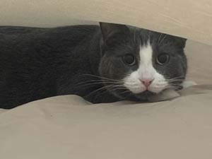

Home

About Cats
Cats are popular companion animals known for being curious, clean, and independent. Many cats form strong bonds with their owners and enjoy routines.
Basic Needs
Every cat needs fresh water, balanced food, a clean litter box, a safe space to rest, and regular veterinary care. Cats also need play and enrichment.
Indoor Cats
Indoor cats are generally safer from cars, parasites, and fights. To prevent boredom, provide climbing spaces, toys, and daily play sessions.
Why Cats Make Great Pets
Cats can be highly intelligent and do well in many living spaces. They often enjoy affection on their own terms and benefit from daily mental stimulation.
Cat Care Checklist
- Fresh water daily
- Clean litter box
- Daily playtime
Steps for New Cat Owners
- Prepare your home with food, water, and a litter box
- Schedule a veterinary checkup
- Establish a routine for feeding and playtime
Cat Terms
- Whiskers
- Sensory hairs that help cats navigate and judge spaces.
- Purring
- A sound cats often make when relaxed, comfortable, or seeking comfort.
- Scratching
- A natural behavior that helps cats maintain healthy claws and mark territory.
Learn more on the Health page.